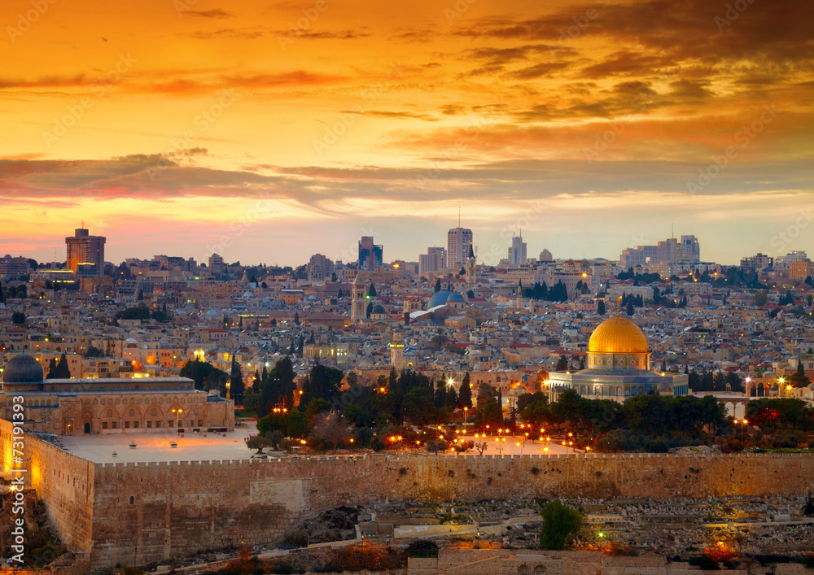

القدس، عاصمة فلسطين التاريخية، تحمل مكانة خاصة في قلوب المسلمين والمسيحيين واليهود على حد سواء. تعتبر المدينة مركزًا دينيًا وثقافيًا هامًا، حيث تحتوي على مواقع تاريخية ودينية بارزة مثل المسجد الأقصى وكنيسة القيامة ومدينة داود. يعود تاريخ القدس إلى آلاف السنين، حيث شهدت الكثير من الأحداث التاريخية التي شكلت هويتها وثقافتها. القدس مقسمة إلى عدة أحياء، منها القديمة التي تتميز بأسواقها الضيقة وأزقتها المليئة بالتاريخ. تعكس العمارة في القدس مزيجًا من الثقافات المختلفة التي تعايشت على مر العصور. على الرغم من التحديات السياسية والاجتماعية التي تواجهها المدينة، لا تزال القدس تحتفظ بجاذبيتها الخاصة، حيث يأتي الزوار من جميع أنحاء العالم لاستكشاف تاريخها الغني وتجربة تنوع ثقافاتها. تعتبر القدس رمزًا للصمود والتحدي، وتجسد رغبة الشعب الفلسطيني في استعادة حقوقه وحريته. تأمل الكثير من الدول والمنظمات الدولية في إيجاد حل يضمن السلام والأمن للمدينة وسكانها، فهي تمثل أملًا للسلام في منطقة الشرق الأوسط.
الاسم قد يكون مرتبطًا بكلمة "قدس" العربية، التي تعني "الطاهر" أو "المقدس"، مما يعكس قدسية المدينة لدى مختلف الأديان. القدس تُعتبر مركزًا روحيًا هامًا للديانات الثلاث: الإسلام والمسيحية واليهودية. في الإسلام، تُعتبر القدس مكانًا مقدسًا، حيث يوجد فيها المسجد الأقصى، وهو أحد أقدس المواقع في الإسلام. كما تُعتبر المسيحية القدس مكانًا مهمًا، حيث يرتبط العديد من الأحداث المسيحية بالمدينة، بما في ذلك صلب المسيح وقيامته. في اليهودية، تُعتبر القدس أرضًا مقدسة، ومكانًا له تاريخ عميق مرتبط بمعابد سليمان والهيكل. تسهم هذه الأبعاد الروحية والتاريخية في تعميق معنى اسم "القدس"، مما يجعلها رمزًا للسلام والأمل، على الرغم من النزاعات السياسية التي تحيط بها. تظل القدس مكانًا يجذب الزوار من جميع أنحاء العالم، لتاريخها الغني وأهميتها الروحية.
تعتبر القدس من أقدس المدن في الإسلام، ولها مكانة خاصة في قلوب المسلمين حول العالم. يُعتبر المسجد الأقصى، الواقع في قلب المدينة، ثالث أقدس موقع بعد المسجد الحرام في مكة والمسجد النبوي في المدينة. يُعتقد أن المسجد الأقصى هو المكان الذي عُرج فيه النبي محمد صلى الله عليه وسلم إلى السماء خلال رحلة الإسراء والمعراج، وهو حدث محوري في العقيدة الإسلامية. تاريخ القدس في الإسلام يمتد لأكثر من 1400 عام، حيث تم فتح المدينة في عام 638 ميلادي على يد الخليفة الراشد عمر بن الخطاب. تم بناء المسجد الأقصى في مكان هيكل سليمان القديم، وأصبح مركزًا للعبادة والتعلم. يُعتبر المسجد الأقصى رمزًا للصمود والتحدي، ويمثل وحدة المسلمين في جميع أنحاء العالم. تحتوي القدس على معالم إسلامية تاريخية عديدة، بما في ذلك قبة الصخرة، التي تعد واحدة من أجمل المعالم المعمارية في العالم. تعكس هذه المعالم التاريخية الفن الإسلامي، وتعتبر مركزًا للتعليم والثقافة. تسهم القدس في تعزيز الهوية الإسلامية وتاريخها. يُعتبر الدفاع عن القدس واجبًا دينيًا وأخلاقيًا بالنسبة للمسلمين، حيث تعتبر المدينة رمزًا للكرامة والحرية. تظل القدس محط أنظار المسلمين، حيث يتوافدون إليها لأداء الصلاة وزيارة الأماكن المقدسة. تتجاوز مكانة القدس الجوانب الدينية إلى الجوانب السياسية والثقافية، مما يجعلها موضوعًا مهمًا للنقاش في العالم الإسلامي. يُعتبر الحفاظ على القدس وحمايتها جزءًا لا يتجزأ من القضية الفلسطينية، وهو ما يجعلها مركز اهتمام دولي ومحلي.